Claude Code 源码解读：包含Agent Loop、Context 管理、Tool 调用、Memory、Muti Agent等模块
TL;DR
基于对 Claude Code 源码的系统性分析，本文从 11 个维度拆解其架构设计，涵盖 Agent Loop、Context 管理、Tool 调用、Memory、权限安全、多智能体协作、可观测性等核心模块。
一、整体架构
Claude Code 是一个基于 TypeScript 的终端 Agent 应用，构建在 Bun 运行时之上，采用 React + Ink 渲染 TUI。其架构设计遵循分层解耦、流式驱动、不可变状态三大原则。
1.1 架构全景图

1.2 入口架构
src/main.tsx (~3000行)
├── 参数解析 (argparse)
├── Feature Flag 门控 (feature() from bun:bundle)
├── 环境检测 (USER_TYPE, CLAUDE_CODE_ENTRYPOINT)
├── 初始化 (迁移、设置、插件)
├── 交互式 REPL 模式
└── 无头模式 (-p/--print)
多客户端支持通过入口点检测实现：
| 客户端 | 检测方式 |
|---|---|
| CLI | 直接执行 |
| SDK | CLAUDE_CODE_ENTRYPOINT=sdk |
| VSCode | Extension 调用 |
| Desktop | Electron 进程 |
| Remote | WebSocket 会话 |
| GitHub Actions | CI 环境检测 |
1.3 状态管理
采用双轨状态架构：
Bootstrap State (全局单例, ~1758行)
├── 模块级 getter/setter
├── 会话生命周期管理
├── Feature Flag 状态
└── 全局配置
AppState Store (不可变状态, ~50+字段)
├── DeepImmutable<T> 类型约束
├── 函数式更新 setAppState(prev => ({...prev, ...}))
├── 选择器模式 (selectors)
└── 按 Agent 隔离 (每个 subagent 独立副本)
二、Agent Loop：流式驱动的核心循环
Agent Loop 是 Claude Code 的心脏，采用 async generator 模式实现流式处理。
2.1 Agent Loop 流程图
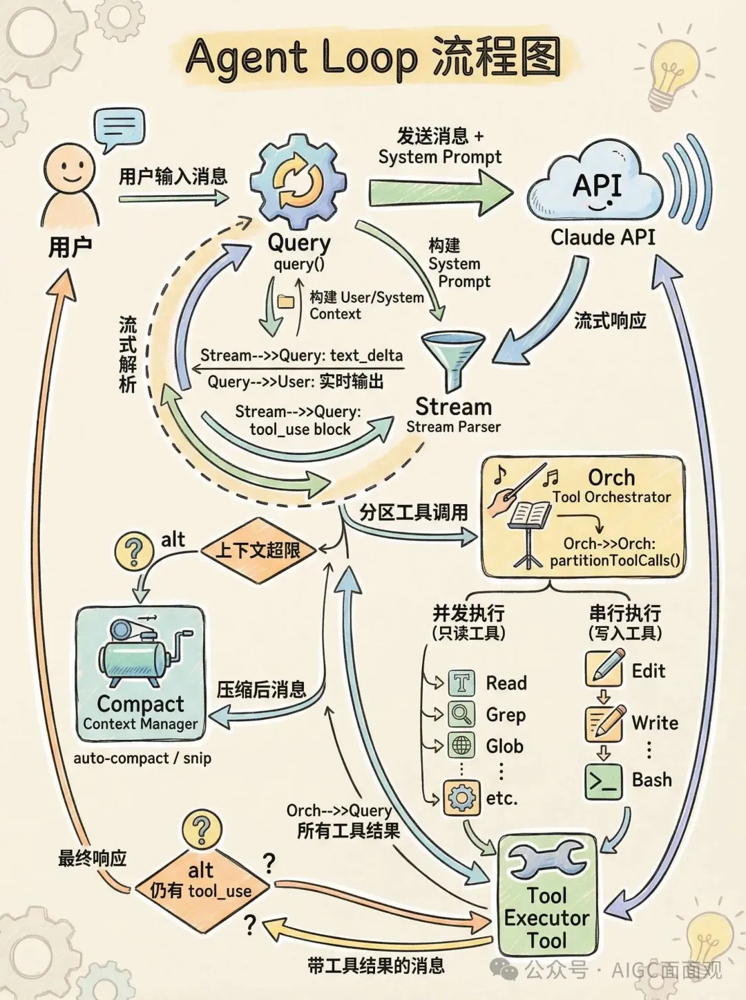
2.2 核心实现
src/query.ts (~1729行) 中的 query() 函数是一个 async generator：
export async function* query(params: QueryParams): AsyncGenerator<
StreamEvent | RequestStartEvent | Message | TombstoneMessage | ToolUseSummaryMessage,
Terminal
> {
const consumedCommandUuids: string[] = []
const terminal = yield* queryLoop(params, consumedCommandUuids)
// 完成后通知命令生命周期
for (const uuid of consumedCommandUuids) {
notifyCommandLifecycle(uuid, 'completed')
}
return terminal
}
关键设计：
| 特性 | 实现 | 说明 |
|---|---|---|
| 状态管理 | State 对象跨迭代携带 | messages, toolUseContext, autoCompactTracking 等 |
| Token 预算 | createBudgetTracker() | 自动续接，+500k 自动继续 |
| 错误恢复 | MAX_OUTPUT_TOKENS_RECOVERY_LIMIT = 3 | 最多 3 次重试 |
| Thinking 规则 | 严格排序要求 | thinking/redacted_thinking 块必须保留在 trajectory 中 |
| 命令队列 | processQueueIfReady() | 用户命令在 turn 之间处理 |
2.3 错误恢复机制
API 调用失败
├── Prompt Too Long
│ └── auto-compact / history snip / context collapse
├── Max Output Tokens
│ └── 重试 (最多3次) → 增加 max_tokens
├── API Error
│ └── 指数退避重试
└── Fallback Model
└── 切换到备用模型
2.4 QueryEngine 封装
src/QueryEngine.ts 为 SDK/无头场景提供类封装：
class QueryEngine {
async *submitMessage(): AsyncGenerator<SDKMessage> {
// 消息变异 → 转录记录 → 使用追踪 → 权限拒绝追踪 → 结构化输出
}
async ask(): Promise<SDKMessage> {
// 一次性 prompt 执行的便捷包装
}
}
三、Context 系统：上下文的全生命周期管理
3.1 Context 架构图
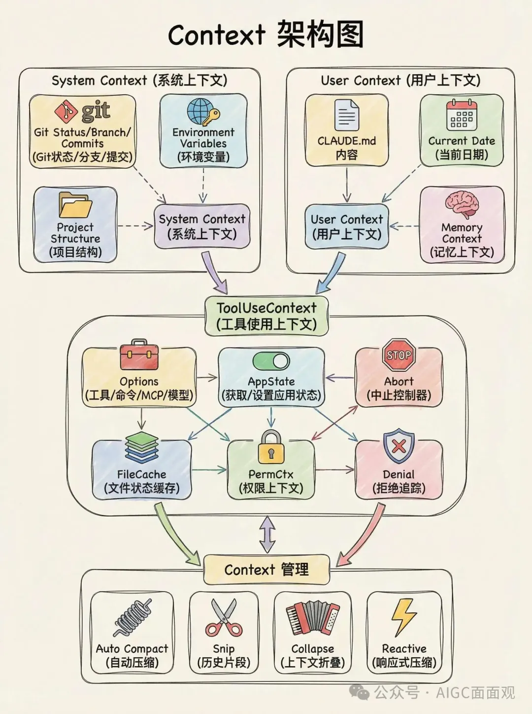
3.2 System Context 构建
// src/context.ts - 带 memoization
getSystemContext() // Git 状态、分支信息、最近提交
getUserContext() // CLAUDE.md 内容、当前日期
缓存失效策略：可选的 system prompt injection（ant-only 调试场景）。
3.3 上下文压缩策略
| 策略 | 触发条件 | 实现 |
|---|---|---|
| Auto Compact | 接近上下文窗口限制 | 自动压缩历史消息 |
| History Snip | Feature-gated | 消息级裁剪 |
| Context Collapse | Feature-gated | 激进上下文缩减 |
| Reactive Compact | 按需触发 | 上下文压力驱动 |
3.4 ToolUseContext：工具调用的丰富上下文
每个工具调用都会收到一个包含 ~15 类信息的上下文对象：
ToolUseContext
├── options: { tools, commands, mcpClients, model, thinking }
├── getAppState / setAppState
├── abortController
├── fileStateCache (LRU 缓存，每 agent 独立)
├── messages: Message[]
├── agentId / agentType
├── permissionContext
├── denialTracking
├── notificationHandlers
└── promptRequestFactory
四、Tool 调用机制：43 个工具的编排艺术
4.1 Tool 接口设计
// src/Tool.ts - 泛型 Tool 接口 (~40个属性/方法)
interface Tool<Input, Output, Progress> {
// 核心方法
call(input: Input, context: ToolUseContext): Promise<Output>
description(): string
prompt(): string
// 安全检查
isReadOnly(): boolean
isDestructive(): boolean
isConcurrencySafe(input: Input): boolean
// 权限
checkPermissions(input, context): PermissionResult
toAutoClassifierInput(): object
// 渲染
renderToolUseMessage(): ReactElement
renderToolResultMessage(): ReactElement
renderToolUseProgressMessage(): ReactElement
// 验证
validateInput(input): ValidationResult
isEnabled(context): boolean
}
4.2 Tool 注册与过滤
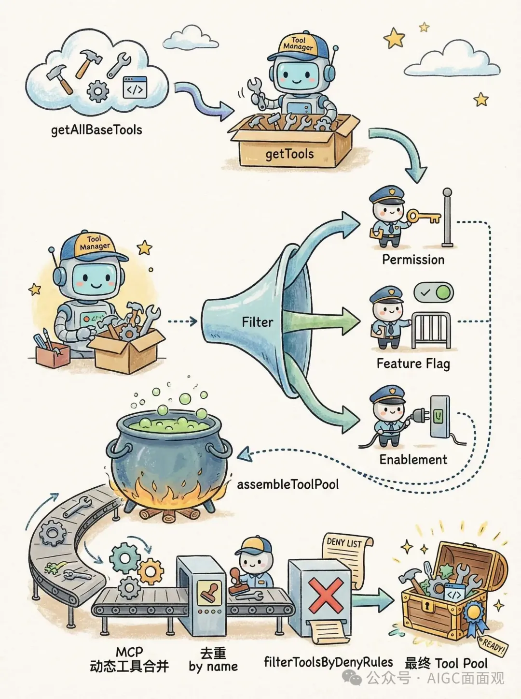
Tool 注册与过滤流程
4.3 工具分类 (43 个)
| 类别 | 工具 | 数量 |
|---|---|---|
| 核心 | Bash, FileRead, FileEdit, FileWrite, Glob, Grep | 6 |
| 网络 | WebSearch, WebFetch | 2 |
| 任务管理 | TaskCreate, TaskGet, TaskUpdate, TaskList, TaskStop, TaskOutput | 6 |
| Agent | AgentTool, TeamCreate, TeamDelete, SendMessage | 4 |
| MCP | MCPTool, ListMcpResources, ReadMcpResource, McpAuth | 4 |
| 规划 | EnterPlanMode, ExitPlanModeV2, TodoWrite | 3 |
| 特殊 | SkillTool, ConfigTool, LSPTool, WorkflowTool, ScheduleCron | 5 |
| 特性门控 | REPLTool, SleepTool, PushNotification, WebBrowser, SnipTool | 5+ |
| 其他 | NotebookEdit, BriefTool, Testing, Tungsten, AskUserQuestion 等 | 8+ |
4.4 工具编排：读写分离的并发策略
// src/services/tools/toolOrchestration.ts
// 分区：连续只读工具并发，写入工具串行
function partitionToolCalls(toolUses: ToolUseBlock[]) {
// 将连续的 isConcurrencySafe 工具分组为并发批次
// 遇到非安全工具则独立为串行执行
}
async function runTools() {
// 1. partitionToolCalls() - 分区
// 2. 并发组 → runToolsConcurrently()
// 3. 串行组 → runToolsSerially()
// 4. 最大并发度: CLAUDE_CODE_MAX_TOOL_USE_CONCURRENCY (默认 10)
}
并发控制策略：
工具调用列表
├── [Read, Grep, Glob] → 并发执行 (只读组)
├── [Edit] → 串行执行 (写入)
├── [Read, Glob] → 并发执行 (只读组)
└── [Bash] → 串行执行 (潜在写入)
4.5 Tool Builder 模式
// buildTool(def) 工厂函数 - 提供安全默认值
buildTool({
name: 'MyTool',
call: async (input, ctx) => { ... },
// 以下方法有安全默认值 (fail-closed)
// isEnabled: () => true
// isConcurrencySafe: () => false ← 默认不安全
// isReadOnly: () => false
// isDestructive: () => false
})
五、Memory 管理：从个人记忆到团队同步
5.1 Memory 架构图
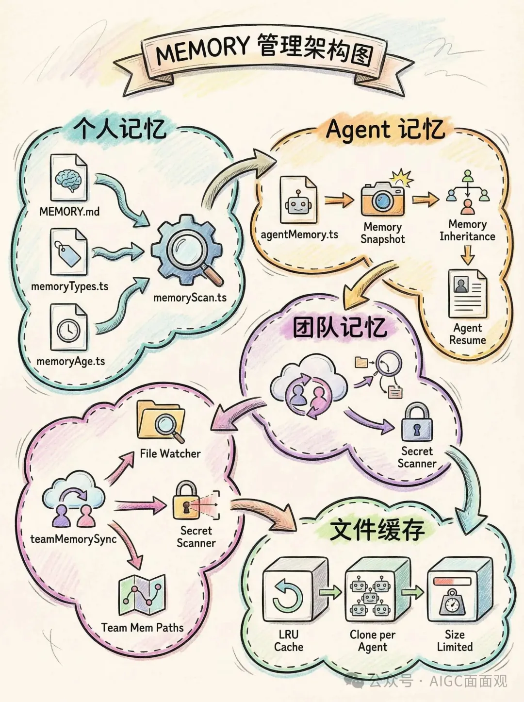
5.2 MEMORY.md 系统
// src/memdir/memdir.ts
const MAX_ENTRYPOINT_LINES = 200 // 200 行上限
const MAX_ENTRYPOINT_BYTES = 25_000 // ~25KB 上限
// 双重截断：先行截断，再字节截断
function truncateEntrypointContent(raw: string): EntrypointTruncation {
// 行截断 → 字节截断 → 警告标记
}
5.3 记忆检索流程
用户输入
└── memoryScan.ts
├── 扫描记忆目录
├── 按相关性排序
├── 加载相关文件
└── 过滤重复记忆附件
└── 注入到 User Context
5.4 Agent 记忆继承
父 Agent
└── agentMemorySnapshot()
├── 捕获当前状态
└── 传递给子 Agent
├── 同步 Agent: 共享快照
├── 异步 Agent: 独立快照
└── Fork Agent: 继承父级 system prompt
5.5 团队记忆同步
// src/services/teamMemorySync/
index.ts // 团队记忆同步服务
watcher.ts // 文件变更监听
secretScanner.ts // 密钥检测
teamMemSecretGuard.ts // 密钥防护
teamMemPaths.ts // 团队记忆路径
teamMemPrompts.ts // 团队提示词
安全特性：团队记忆写入前经过密钥扫描，防止敏感信息泄露。
5.6 文件状态缓存
// src/utils/fileStateCache.ts
// LRU 缓存，每个 agent 独立克隆
// 异步 agent 有大小限制，防止内存泄漏
六、权限与安全：五层决策引擎
6.1 权限决策流程图
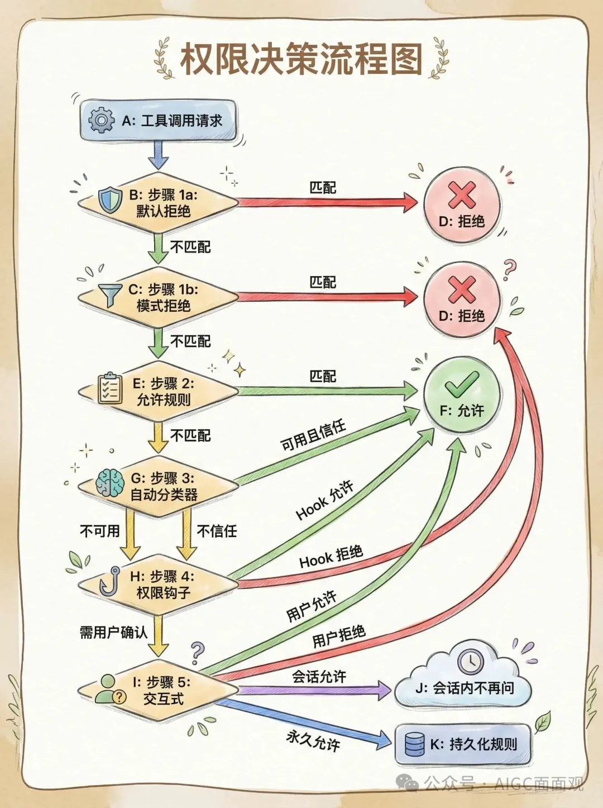
6.2 权限模式 (6 种)
| 模式 | 行为 | 适用场景 |
|---|---|---|
| default | 每次询问 | 默认安全模式 |
| plan | 只读，不允许编辑 | 规划阶段 |
| acceptEdits | 自动允许编辑 | 信任 Agent 的编辑能力 |
| bypassPermissions | 完全跳过权限检查 | 完全信任 |
| dontAsk | 拒绝而不询问 | 自动化场景 |
| auto | ML 分类器决策 | 智能权限判断 |
6.3 规则解析
// permissionRuleParser.ts
// 支持模式匹配，如:
// "Bash(git *)" → 允许所有 git 命令
// "Edit(src/**)" → 允许编辑 src 目录下的文件
// "Bash(rm -rf *)" → 拒绝危险删除操作
6.4 拒绝追踪与降级
// denialTracking.ts
// 追踪连续拒绝次数
// 超过阈值后降级为交互式询问
const DENIAL_LIMITS = {
// 连续拒绝 N 次后 fallback
}
function shouldFallbackToPrompting(state: DenialTrackingState): boolean {
// 连续拒绝过多 → 自动模式不可信 → 回退到用户确认
}
6.5 安全层
权限系统
├── Sandbox (macOS Seatbelt)
│ └── sandbox-adapter.js
├── Auto-mode Classifier
│ ├── yoloClassifier.ts
│ └── classifierDecision.ts
├── Hook-based 权限检查
│ ├── PreToolUse
│ └── PostToolUse
├── 密钥扫描
│ └── teamMemSecretGuard.ts
├── MDM Policy 限制
│ └── 企业策略执行
└── Remote Managed Settings
└── 管理员配置控制
七、多智能体系统：Subagent / Team / Swarm / Coordinator
7.1 多智能体架构全景
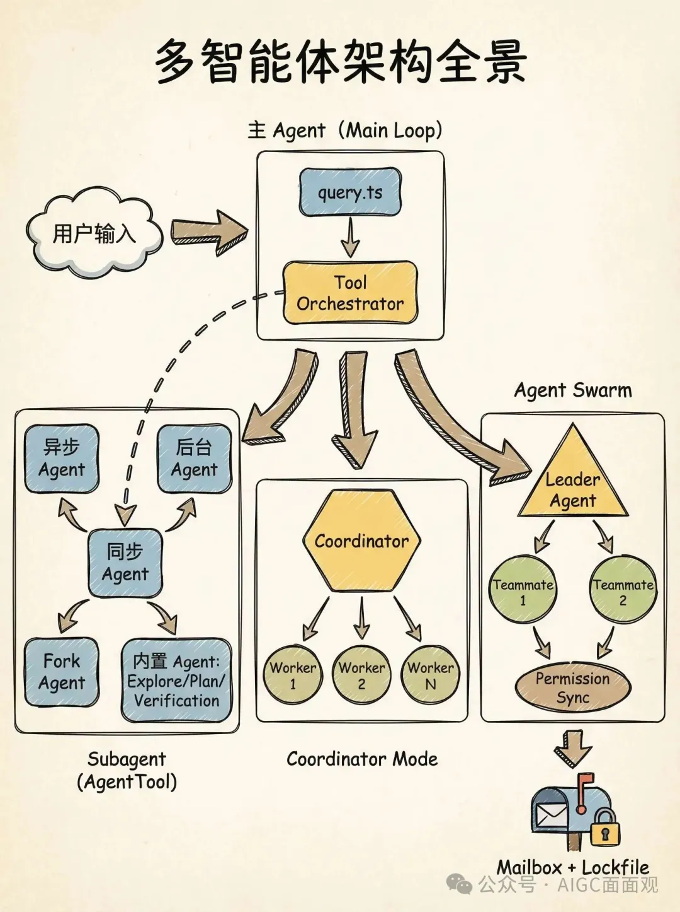
7.2 Agent 类型对比
| 类型 | 阻塞父级 | 共享 Abort | 执行方式 | 适用场景 |
|---|---|---|---|---|
| Sync Agent | ✅ | ✅ | 阻塞父 turn | 需要立即结果的子任务 |
| Async Agent | ❌ | ❌ | 独立运行，完成通知 | 长时间运行的后台任务 |
| Background Agent | 初始阻塞 → 自动后台 | ❌ | 120s 后自动转后台 | 超长时间任务 |
| Fork Agent | ✅ | ✅ | 缓存优化，继承父 prompt | 需要 cache-identical prefix 的场景 |
| Built-in Agent | 视类型 | 视类型 | 预定义行为 | Explore/Plan/Verification |
7.3 AgentTool 实现
// src/tools/AgentTool/AgentTool.tsx (~1400行)
// src/tools/AgentTool/runAgent.ts (~973行)
// 核心能力
├── 子 Agent 生成
├── 独立 query loop
├── 工具池过滤 (deny rules)
├── MCP 需求过滤
├── Model 选择 (per-agent)
├── Worktree 管理
├── Agent 颜色管理
├── 进度追踪
├── 远程 Agent 支持
└── Agent 元数据持久化
7.4 Coordinator Mode
// src/coordinator/coordinatorMode.ts
// 通过 CLAUDE_CODE_COORDINATOR_MODE 环境变量启用
// Worker 工具集 (受限)
const ASYNC_AGENT_ALLOWED_TOOLS = [
// 只允许基础工具
]
// Coordinator 专属工具
const INTERNAL_WORKER_TOOLS = new Set([
TEAM_CREATE_TOOL_NAME,
TEAM_DELETE_TOOL_NAME,
SEND_MESSAGE_TOOL_NAME,
SYNTHETIC_OUTPUT_TOOL_NAME,
])
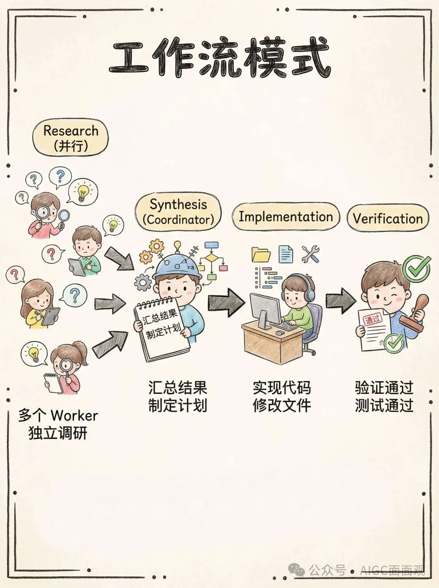
7.5 Agent Swarm
src/utils/swarm/ (~18+ 文件)
├── backends/
│ ├── TmuxBackend.ts # Tmux 终端后端
│ ├── ITermBackend.ts # iTerm2 终端后端
│ └── InProcessBackend.ts # 进程内后端
├── spawnInProcess.ts # 进程内 teammate 生成
├── inProcessRunner.ts # 进程内执行器
├── teammateInit.ts # Teammate 初始化
├── teammateModel.ts # 每个 teammate 的模型选择
├── teammateLayoutManager.ts # 终端面板布局
├── permissionSync.ts (~928行) # 跨 agent 权限协调
├── leaderPermissionBridge.ts # Leader 中介权限解析
├── teamHelpers.ts # 团队文件操作
└── reconnection.ts # 团队重连逻辑
7.6 Swarm 权限同步 (Mailbox 模式)
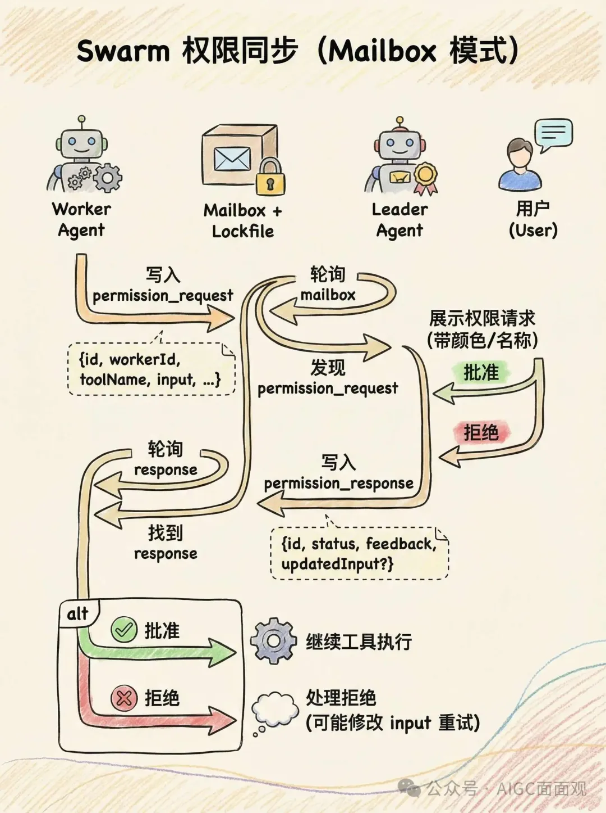
7.7 四种模式对比
| 维度 | Subagent | Coordinator | Swarm | Team |
|---|---|---|---|---|
| 复杂度 | 低 | 中 | 高 | 中高 |
| 通信 | 直接调用 | SendMessage | Mailbox | Team 文件 |
| 权限 | 继承/独立 | Coordinator 代理 | Leader 桥接 | 共享 |
| 终端 | 共享 | 共享 | 独立面板 | 独立面板 |
| 适用 | 子任务委托 | 多 worker 编排 | 并行探索 | 团队协作 |
| 后端 | 进程内 | 进程内 | Tmux/iTerm2/InProcess | Tmux/iTerm2 |
八、可观测性：22 种 Hook 与全链路追踪
8.1 Hook 系统架构
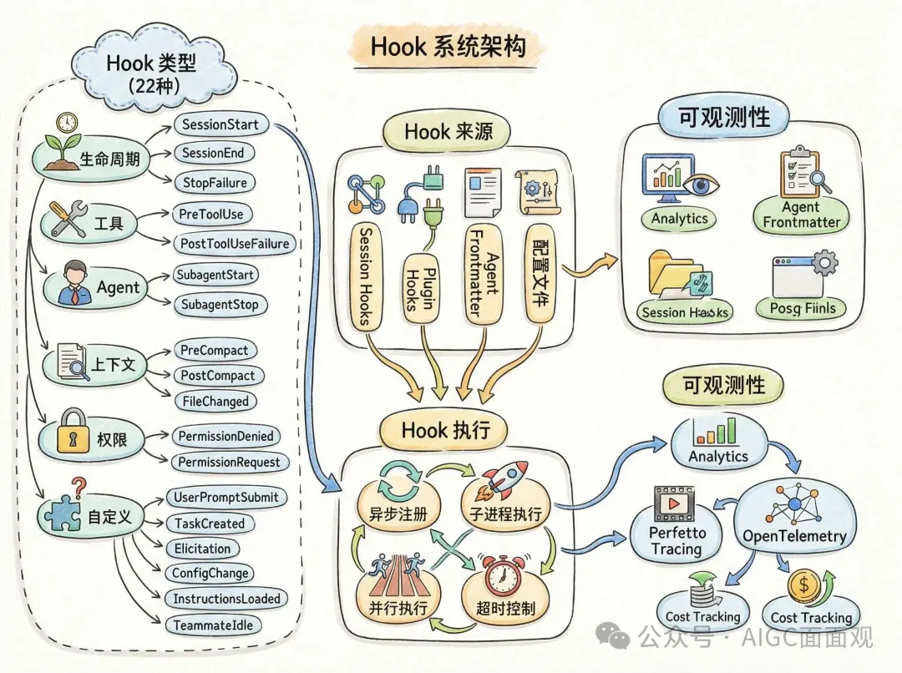
8.2 22 种 Hook 类型
| 类别 | Hook 类型 | 触发时机 |
|---|---|---|
| 生命周期 | SessionStart | 会话开始 |
| SessionEnd | 会话结束 | |
| Stop | 正常停止 | |
| StopFailure | 异常停止 | |
| 工具 | PreToolUse | 工具执行前 |
| PostToolUse | 工具执行后 | |
| PostToolUseFailure | 工具执行失败 | |
| Agent | SubagentStart | 子 Agent 启动 |
| SubagentStop | 子 Agent 停止 | |
| 上下文 | PreCompact | 上下文压缩前 |
| PostCompact | 上下文压缩后 | |
| CwdChanged | 工作目录变更 | |
| FileChanged | 文件变更 | |
| 权限 | PermissionDenied | 权限被拒绝 |
| PermissionRequest | 权限请求 | |
| 自定义 | UserPromptSubmit | 用户 prompt 提交前 |
| TaskCreated | 任务创建 | |
| TaskCompleted | 任务完成 | |
| Elicitation | MCP 诱导请求 | |
| ConfigChange | 配置变更 | |
| InstructionsLoaded | 指令加载完成 | |
| TeammateIdle | Teammate 空闲 |
8.3 Hook 执行模型
// src/utils/hooks.ts (~5022行)
// Hook 作为子进程执行
const TOOL_HOOK_EXECUTION_TIMEOUT_MS = 10 * 60 * 1000 // 10 分钟
const SESSION_END_HOOK_TIMEOUT_MS_DEFAULT = 1500 // 1.5 秒
// 异步 Hook 注册表
class AsyncHookRegistry {
// 追踪待完成的异步 Hook
}
// Hook 执行流程
executeHook(hookEvent, input) {
// 1. 匹配 Hook (配置 + frontmatter + plugin + session)
// 2. 构建输入 JSON
// 3. 生成子进程
// 4. 解析输出 (同步/异步)
// 5. 处理响应 (消息注入/权限更新/...)
}
8.4 遥测与分析
src/services/analytics/
├── index.ts // 核心 analytics, logEvent()
├── sink.ts // 事件 sink 管理
├── sinkKillswitch.ts // sink 熔断
├── datadog.ts // Datadog 集成
├── growthbook.ts // Feature Flag 系统 (Statsig/GrowthBook)
├── firstPartyEventLogger.ts // 第一方事件
└── firstPartyEventLoggingExporter.ts // 事件导出
8.5 追踪系统
// OpenTelemetry Session Tracing
startHookSpan(hookName) // Hook span 开始
endHookSpan(span) // Hook span 结束
// Perfetto Tracing (Agent 层级可视化)
// 可视化 Agent 父子关系、工具调用链、时间线
8.6 成本追踪
// src/cost-tracker.ts
getModelUsage() // 模型使用统计
getTotalCost() // 总成本 (USD)
getTotalAPIDuration() // API 总耗时
九、调度系统：Cron、队列与 Loop 技能
9.1 调度系统
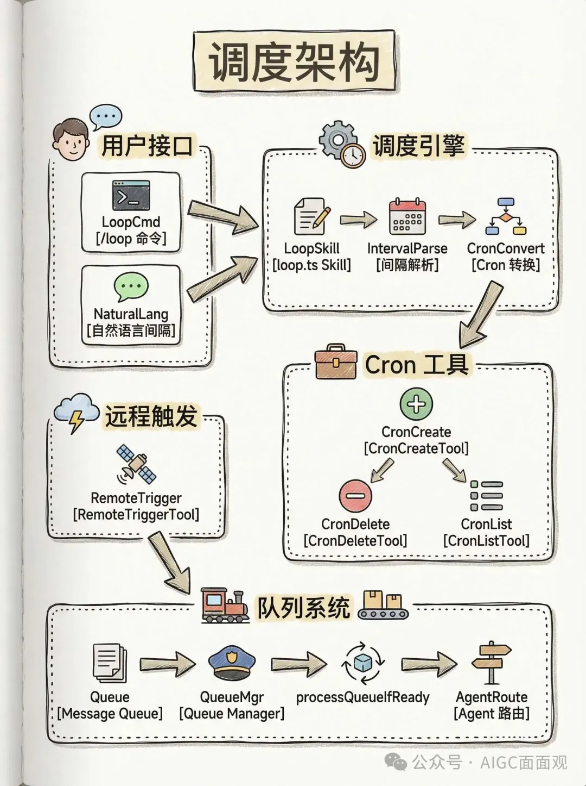
9.2 Cron 调度
// src/tools/ScheduleCronTool/
// 间隔解析: Ns, Nm, Nh, Nd → cron 表达式
// 自动过期: DEFAULT_MAX_AGE_DAYS
// 支持的间隔格式
"every 5 minutes" → */5 * * * *
"every 2 hours" → 0 */2 * * *
"every 3 days" → 0 0 */3 * *
9.3 Loop 技能
// src/skills/bundled/loop.ts
// /loop 命令 - 用户友好的循环任务调度
// 解析自然语言间隔
// 转换为 cron 表达式
// 通过 CronCreateTool 调度
9.4 消息队列
// src/utils/queueProcessor.ts
// src/utils/messageQueueManager.ts
// 队列能力
├── 用户 prompt 排队
├── 任务通知排队
├── Bash 命令排队
├── 优先级队列
├── Slash 命令检测与路由
├── 非 slash 命令批量处理 (相同 mode)
└── Agent 路由 (通过 agentId 寻址)
队列处理策略：
消息队列
├── 非 slash 命令 + 相同 mode → 批量处理
├── Slash 命令 → 逐个处理
├── Bash 命令 → 逐个处理
└── 带 agentId → 路由到指定 Agent
十、复用模式：10 种架构模式总结
10.1 模式一览表
| # | 模式 | 应用场景 | 核心文件 |
|---|---|---|---|
| 1 | Async Generator | query/submitMessage/runAgent/runTools 统一流式 | query.ts, QueryEngine.ts |
| 2 | Feature Flag | 编译时死代码消除 | bun:bundle, feature() |
| 3 | Context Injection | ToolUseContext 统一注入 | Tool.ts |
| 4 | Tool Builder | 工厂 + 安全默认值 | buildTool(def) |
| 5 | Immutable State | DeepImmutable + 函数式更新 | AppStateStore.ts |
| 6 | Mailbox | 跨 Agent 协调 (lockfile) | permissionSync.ts |
| 7 | Cache-Aware | Prompt cache + content-hash | 多处 |
| 8 | Lazy Schema | 打破循环依赖 | lazySchema() |
| 9 | Dead Code Elimination | 条件导入 + 用户类型分支 | require() 动态加载 |
| 10 | Hook Event | 生命周期事件发射 | hooks.ts |
10.2 模式详解
模式 1: Async Generator
// 统一的流式处理模式
async function* query(): AsyncGenerator<Event, Terminal> { ... }
async function* submitMessage(): AsyncGenerator<SDKMessage> { ... }
async function* runAgent(): AsyncGenerator<Message> { ... }
async function* runTools(): AsyncGenerator<MessageUpdate> { ... }
优势：天然支持流式响应、增量处理、中间状态观察。
模式 2: Feature Flag
// 编译时死代码消除
const reactiveCompact = feature('REACTIVE_COMPACT')
? require('./reactiveCompact.js')
: null
// Schema 门控
...(feature('TRANSCRIPT_CLASSIFIER') ? { auto: 'auto' } : {})
模式 3: Context Injection
// 每个 tool 接收统一的 ToolUseContext
call(input: Input, context: ToolUseContext): Promise<Output>
// Subagent 创建独立上下文
createSubagentContext(parent, { shareAppState: true })
模式 4: Tool Builder
buildTool({
name: 'MyTool',
call: async (input, ctx) => { ... },
// 安全默认值 (fail-closed)
// isConcurrencySafe: () => false ← 默认不安全
// isReadOnly: () => false
})
模式 5: Immutable State
type AppState = DeepImmutable<{
messages: Message[]
tools: Tools
// ... 50+ 字段
}>
// 函数式更新
setAppState(prev => ({ ...prev, messages: [...prev.messages, newMsg] }))
模式 6: Mailbox
文件级 Mailbox
├── 写入: 创建 .json 文件到 mailbox 目录
├── 读取: 扫描目录 + 解析 JSON
├── 锁: lockfile 保证并发安全
└── 清理: 处理后删除
模式 7: Cache-Aware
// Prompt cache break 检测
// Content-hash 临时文件路径 (避免 UUID 导致的 cache miss)
// Fork Agent 继承父级 system prompt (cache-identical prefix)
// Turn 开始时冻结渲染的 system prompt
十一、关键文件索引
| 组件 | 核心文件 | 行数 |
|---|---|---|
| 入口 | src/main.tsx | ~3000+ |
| Agent Loop | src/query.ts | 1729 |
| Query Engine | src/QueryEngine.ts | 1295 |
| Tool 接口 | src/Tool.ts | 792 |
| Tool 注册 | src/tools.ts | 389 |
| Tool 编排 | src/services/tools/toolOrchestration.ts | 188 |
| 权限引擎 | src/utils/permissions/permissions.ts | 1486 |
| 权限模式 | src/utils/permissions/PermissionMode.ts | 141 |
| Hooks | src/utils/hooks.ts | 5022 |
| Agent Tool | src/tools/AgentTool/AgentTool.tsx | ~1400 |
| Run Agent | src/tools/AgentTool/runAgent.ts | ~973 |
| Coordinator | src/coordinator/coordinatorMode.ts | 369 |
| Swarm 权限 | src/utils/swarm/permissionSync.ts | 928 |
| Memory | src/memdir/memdir.ts | 507 |
| State | src/bootstrap/state.ts | ~1758 |
| AppState | src/state/AppStateStore.ts | 569 |
十二、总结
Claude Code 的架构设计体现了几个核心理念：
- 流式优先：从 Agent Loop 到 Tool 执行，全部采用 async generator，天然支持流式处理和增量渲染。
- 安全默认：Tool Builder 的 fail-closed 设计、权限系统的五层决策、Sandbox 隔离，处处体现安全优先。
- 不可变状态：DeepImmutable 类型约束 + 函数式更新，避免状态突变带来的难以追踪的 bug。
- 模块化编排：43 个工具通过统一的接口和编排器协同工作，读写分离的并发策略兼顾了性能和安全。
- 多智能体层次：从简单的 Subagent 到复杂的 Swarm，提供了不同复杂度的多智能体方案，适应不同场景需求。
- 可观测性内建：22 种 Hook 类型 + OpenTelemetry 追踪 + Perfetto 可视化，让系统行为完全可观测。
- Feature Flag 驱动：通过
bun:bundle的 feature() 实现编译时死代码消除，同时支持灰度发布和 A/B 测试。
这个假期结合Coding Agent对 Claude Code的51万+源码深度解读。从源码分析了 Agent Loop、Context 管理、Tool 调用、Memory、权限安全、多智能体协作、可观测性等核心模块，同时对每个模块做了详细的说明
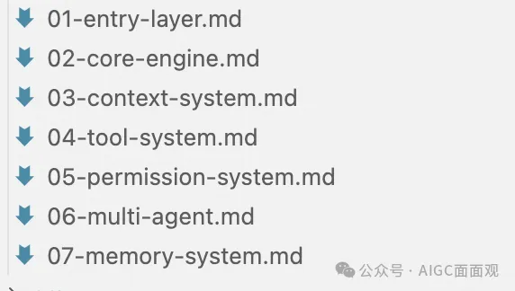
仓库地址：https://github.com/wisdom-pan/claude-code-learning